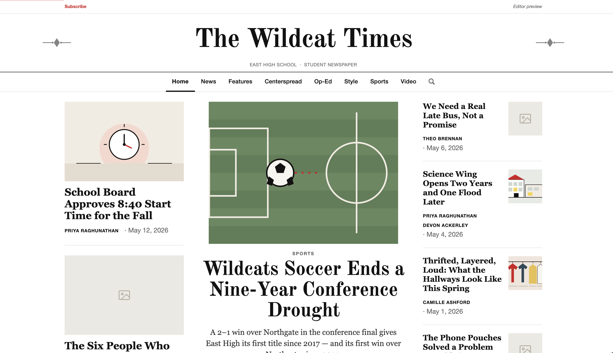

First Edition
An open-source school newspaper website with an in-browser editor dashboard that runs behind any school's login.
Learn moreShow less
I built it solo over summer 2026 for The Woodley Leaves. Plain HTML, CSS, and JavaScript with no build step; an editor dashboard that works behind any school's login; a WordPress importer; 1,151 automated tests across 26 suites and a Lighthouse accessibility gate in CI. The release and the preprint describing the design are cited under Publications.
- HTML
- CSS
- JavaScript